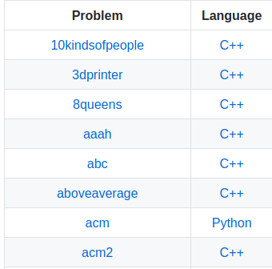

Competitive Programming - Kattis
Kattis is a competitive programming practice website, for which I've taken a particular liking. As of time of writing I am in the top 250 users out of many thousands. This respostory holds my solutions for problems, and I often come back to check what a previous thought process was. The problems are solved using C++ and Python and tied together by shell scripts.

Repo Link
Competitive Programming - CodeForces
CodeForces is a competitive programming practice website, which I have used far less than Kattis. Their tightly time limited contest structure is different from what I'm used to, but I'm certainly trying to get better. The problems have a different feel from Kattis and usually have less fluff/context around the problem. As with Kattis, I mostly use C++ to solve problems with an occasional sdolution in Python.
 Repo Link
Repo Link
Processor Emulator
Project for Computer Organization and Architecture(COA). Emulates assembly instruction input/execution for the 6502 processor. The emulator features a fairly intense suite of tests and attempts to have good layering between functionality as much as possible. The 6502 was used in a many early gaming consoles, and I might actually turn it into a full console emulator in the far future.
Repo Link
Heart Engine Nearing
2D Video Game made in C# with some of my engineering friends. Currently in development so not claims can be made about content as of now.

VEXU Robotics
I am the programmer for SDSM&T's VEXU Robotics team. We've made it to at least the quarter-finals every year since I joined as a freshman. Robotics is one of the most interesting things I've done so far in my entire university education. You can't do everything yourself, both due to time and due to your experience. The team needs multiple people with different skills to come together to create anything worthwhile.
 VEXU Team Page
Repo Link
VEXU Team Page
Repo Link
Locket Match Queries - WIP
Pulls data from Valve's API and stores to a local MySQL database which is then used to give detailed information about players. Existing stats website can give information about how a professional teams plays together or on indivual ametuer players. This program would allow checking up on non professional teams in leagues like CSL and AD2L with the same detail that existing website would give for professionals. This project uses Clojure for API calls and data processing, with storage and retreival being done with SQL
 Repo Link
Repo Link
Chronological Notes for Fantasy Calendars - WIP
Windows application meant to keep track of dates and unique time systems for tabletop games. This gave me a good chance to practice TDD and Azure CI. It uses C# for logic code and XAML/WPF for GUI. I've dropped this project currently, but I would like to revisit it later with more C# experience. I think it's main problem currently is a massive amount of UI code bloat.
 Repo Link
Repo Link
Webpage Practice
This github.io page was created by hand using standard html and css.
Repo Link